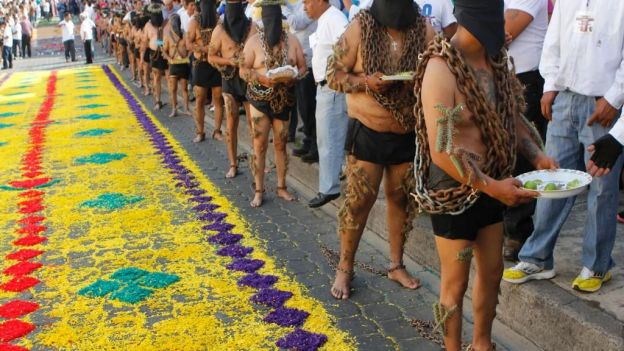

¿QUE ES SEMANA SANTA?
Última semana de la cuaresma, la Semana Santa es la conmemoración anual cristiana de la Pasión, Muerte y Resurrección de Jesús de Nazaret. Por eso, es un período de intensa actividad litúrgica dentro de las diversas confesiones cristianas. Da comienzo el Domingo de Ramos y finaliza el Domingo de Resurrección.
Vivir la Semana Santa es acompañar a Jesús con nuestra oración, sacrificios y el arrepentimiento de nuestros pecados. Asistir al Sacramento de la Penitencia en estos días para morir al pecado y resucitar con Cristo el día de Pascua.
Días de la semana santa:
Domingo de Ramos. Entrada triunfal de Jesucristo en Jerusalén.
Lunes Santo. Unción de Jesús en casa de Lázaro. Jesús expulsa a latigazos a los mercaderes del Templo de Jerusalén.
Martes Santo. Jesús anticipa a sus discípulos la traición de Judas y las Negaciones de San Pedro.
Miércoles Santo. Judas Iscariote conspira con el Sanedrín para traicionar a Jesús por treinta monedas de plata.
Jueves Santo. Lavatorio de los pies. La Última Cena. Eucaristía. Oración de Jesús en el huerto de Getsemaní. Arresto de Jesús.
Viernes Santo. Prisión de Jesús. Los interrogatorios de Caifàs y Pilato. La flagelación. La coronación de espinas. Vía Crucis. Crucifixión de Jesús. Sepultura de Jesús.
Sábado Santo. Vigilia Pascual.
Ana Lilia Martínez Poblano
LA SEMANA SANTA EN ATLIXCO
Durante la temporada vacacional de Semana Santa que se lleva a cabo en el municipio de Atlixco, el alcalde Ricardo Camacho Corripio dio a conocer las tradiciones de fe que distinguen a la entidad que, aunado a los diversos atractivos que la región ofrece, permitirá atraer más de 80 mil visitantes en estos días.
“Entre las tradiciones que han distinguido a Atlixco es la ‘Procesión del Silencio’ en la comunidad de Nexatengo, la cual es realizada por la cofradía de Nazarenos de la entidad y la ‘Procesión de Engrillados’. Cabe mencionar que ambos eventos son actos de penitencia, fe y de arrepentimiento, mismos que se realizarán el próximo 6 de abril a partir de la seis de la mañana en Santa Lucía Cosamaloapan”, refirió el alcalde.

Cabe precisar que en la “Procesión de los Engrillados” los participantes se caracterizan por vestir de luto y portar pesadas cadenas de aproximadamente 60 kilos, además de ponerse espinas en el cuerpo. Ellos recorren las principales calle de la ciudad y tienen una preparación, tanto espiritual como física de dos meses.
Los engrillados son hombres que para pagar una penitencia o agradecer un milagro, recorren más de 3 kilómetros de calles del municipio
Tapete monumental
Asimismo, Camacho Corripio invitó a todos los poblanos y personas de otros estados vecinos a admirar el tapete monumental de “Flores de Primavera”, el cual fue hecho con más de 160 mil plantas y con imágenes alusivas a esta temporada de Semana Santa, y otro con diseños representativos de Atlixco.
Ana Lilia Martínez Poblano